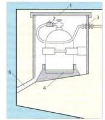

Flüssiggasanlagen (Butan, Propan) erfreuen sich ar Bord wachsender Beliebtheit. Oa diese Gase in Verbindung mit Luft höchst explosiv sind, kommt der vorschriftsmäßigen Installation große Bedeutung zu. Anlage und Gasbehälter müssen de- DIN (N ISO 10?» und cen »Technischen Regeln für Flüssiggasanlagen auf Motoryachten und Segelbooten-entsprecnen (Arbeitsblatt G 608). Sie sind von der Deutschen Vereinigung des Gas- und Wasserfaches (DVGW) und dem Deutschen Verband Flüssiggas (DVFG) erarbeitet worden. Die Anlage darf erstmalig nur in Gegen -wat eines sachkundigen Installateurs, der die Leitungen und Anschlüsse auf Dichtigkeit hm untersucht, in Betrieb genommen werden, und muss alle zwei Janre überprüft werden. Eine Bescheinigung über den ordnungsgemäßen Einbau ist an Bord aulzubewahren. ► Die Gasflaschen sollen möglichst an Deck.
außerhalb der Wohnraume geschützt vo’ Sonneneinstrahlung. installiert werden, hur auf kleinen Booten, auf denen das nuht möglich ist, dürfen sie n einem nur vor außen zugänglichen gasdichten Raum untergebracht werden. Entweichendes Gas, das schwerer als lüft ist.
Gasflaschen -Eiwtau
1 Von den übrigen Raumen «geschotteter »asten
2 Sitlerheitsdruk'egler
3Schoitit"Schraubung
4 Sicher« Haltevung oerllasen«
5 Abfluss über d*< Wasserlir e muss nach außenbords abfließen können. Deshalb ist an der tiefsten Stelle des Fla-schentaumes ein Abflussrohr mit Gefälle nach außenbords zu fuhren, das aber über der Wasserlinie münden muss. In den 'laschenraumen dürfen keine anderen Gegenstände unte'gebracht werden.
► Es dürfen nur Gerate (Kocher etc.) Mit einer einwandfrei arbeitenden Zündsicherung eingebaut werden
► Nach Gebraucn immer alle Hahne und das Flaschenventil schließen. Alle Ver bindungssteilen regelmäßig auf Undichtigkeiten Überprüfen, indem man sie mit Seifenwasser bepinselt oder mit ent sprechendem Spray bespuht (Blasenbildung).
► In der Nahe des Xocers und des Flaschenraumes sind Feuerlöscher griffoe reu zu halten.
Ist trotz alle» Vorsichtsmaßnahmen Flüssiggas ms Boot gelangt,
► keine elektrischen Schalter betätigen, Funk und Handy nicht benutzen und für gute Durchlüftung sorgen.
DIE BORDBATTERIE
Von etwa 30 PS (22 kW) an aufna-ts sind Au3enbordmotoren mit einem E-Star ter ausgerüstet. Demzufolge ist eine Star terbatterie erforderlich (Mindestkapazitat S6 Ah) Auf gröberen Booten ist es üblich, zwei Batterien tu verwenden. Eine dient der Stromversorgung von Beleuchtung und e'ek-tnschen Geraten, die andere ausschlie B-!>ch ais Stanerbattene. Nach threr Bauweise unterscheidet man Nassbatterien, als häufig verwendete und bekannteste Batterie-an Gelbatteriea, deren Haltbarkeit deutlich Tanger als die der normalen Batterien ist, und die AGM - Batterien als derzeit modernste Entwicklung der Bleiakkus.
► 9er Ladezustand (die Sauredichte) muss etwa alle zwei bis drei Monate mit einem Siureprufer kontrolliert werden. (>r.e neu geladene Batterie erreicht einen Wert von 1,28 kg/l. ist er auf 1,1? kg/l abgesun »en muss sofort nacnqeladen werden.
► Beim Aufladen den Batterieraum gut belüften, denn besonders in der letzten ladtphase können explosive Gase (Knall gas) entweichen.
► Der Flussigkeitsstand (Elektroiytstand) muss ebenfalls alle zwei bis drei Monate überprüft werden. Ist die Flüssigkeit bis auf die Oberfläche de- Bleipiatten abgesunken, muss destilliertes Wasser nachgefüllt we-dei
Die neuen wartungsfreien und kippsicheren Batterien sind he-metisch abgeschlossen. Sie haoen keine Stopfbuchsen zum Nach füllen destillierten Wassers mehr Das beim laden entstehende Gas kondensiert an der Oberfläche ces Akkus und fließt als Wasser wieder zuruck
Sichtrhrttwisrusnin, für »in kleine« Sportboot Vtvbandskauen
Anker mit Anlergewfnr
Bootshaken
/Stechpaddel
Schlepptrcsse'fesimacheleu-e
Wftwrdicnte und str.wi.-m'amgr
Tascber.'jmpe
Schopf gelaß oder lenzpumpe
2-tg-feuer?«cher
► Pole und Polklemmen stets sauber halten und mit Vasehne einfetter
► Die Batterie muss sicher gehaltert sein, besonders au’ schnellen Gleitbooten, die starken Schlagen ausgesetzt sind.
